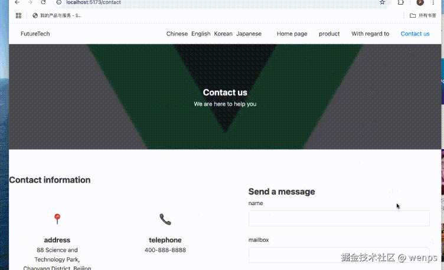
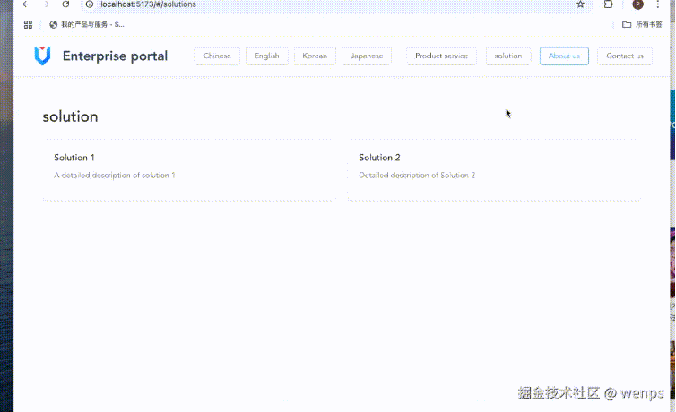
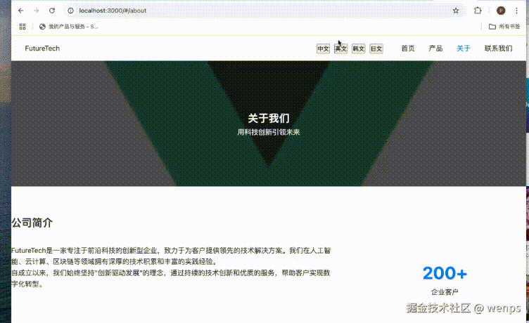
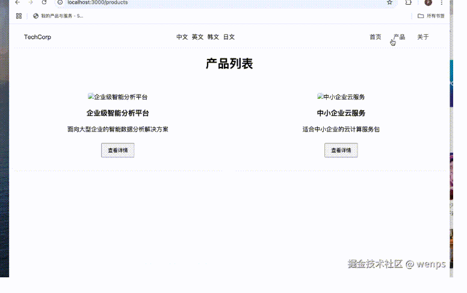

🚀 前言
大家好呀！之前给大家介绍过一个关于国际化的 Vite 插件 vite-plugin-auto-i18n，这是一个自动翻译的 i18n Vite 插件。但当时这个插件还不够完美。所以，时隔一年，我们带来了前端国际化插件的升级版——更兼容、更适配、更稳定。🎉
国际化对于大型项目来说一直是一个令人头痛的问题。通常需要手动在项目中替换对应的文字，并维护一个配置（map）。这不仅低效，还需要耗费大量人力。一个大型项目的国际化工作可能需要测试和产品团队一起工作几个星期。那么，有没有一种方法可以无需改动业务代码，自动生成翻译呢？
答案是肯定的！这就是我们基于 Babel 开发的自动翻译插件 —— auto-i18n-translation-plugins！
「注：该插件基于 Babel 解析页面中的目标字符，统一翻译，最终生成一个 JSON 配置文件。如果觉得谷歌翻译不准确，可以直接修改 JSON 文件内容。插件的翻译键（key）是基于哈希算法生成的，类似对称加密。相同的字符会生成相同的键，不会重复翻译。此外，翻译是统一收集后再组装文本，并分割写入配置文件，不用担心发出大量翻译请求。」
我们希望大家可以尝试一下这个插件，它一定能够提高你们的工作效率和项目的国际化能力。💪🌍
代码仓库: auto-i18n-translation-plugins
🏆 核心特点
- 🛠️ 「无需改动业务代码」，一键快速翻译多语言；
- 🌐 支持 「多种翻译服务」（包括 Google 和有道，也支持自定义翻译器）；
- 🥵 「支持所有编译成 js 的前端框架」（vue2/3，react）
- 🉑️ 「支持主流构建工具」（vite，webpack，rollup）
- 🔍 「智能检测」 需要翻译的文本；
- 🔧 提供 「灵活的配置选项」，满足不同项目需求；
- 🆕 「支持新增语言」，自动补全配置；
- 🌍 支持 「多国语言」。
📖 插件概述
auto-i18n-translation-plugins 是一个强大的全自动国际化插件，涵盖了 Vite 和 Webpack 的子插件 vite-auto-i18n-plugin 和 webpack-auto-i18n-plugin，提供了一键翻译和自动补全的功能。🌟
🌟 快速开始
1️⃣ 安装插件
「Vite 项目」
npm install vite-auto-i18n-plugin --save-dev
# 或
yarn add vite-auto-i18n-plugin --dev
「Webpack 项目」
npm install webpack-auto-i18n-plugin --save-dev
# 或
yarn add webpack-auto-i18n-plugin --dev
2️⃣ 配置示例
「Vite 配置示例」 (vite.config.js)
import { defineConfig } from "vite";
import vitePluginAutoI18n from "vite-auto-i18n-plugin";
import vue from "@vitejs/plugin-vue";
export default defineConfig({
plugins: [
vue({
template: {
compilerOptions: {
hoistStatic: false,
cacheHandlers: false,
},
},
}),
vitePluginAutoI18n({
targetLangList: ["en", "ko", "ja"],
translator: new YoudaoTranslator({
appId: "4cdb9baea8066fef",
appKey: "ONI6AerZnGRyDqr3w7UM730mPuF8mB3j",
}),
}),
],
});
「Webpack 配置示例」 (webpack.config.js)
const webpackPluginsAutoI18n = require("webpack-auto-i18n-plugin");
const { YoudaoTranslator } = require("webpack-auto-i18n-plugin");
const i18nPlugin = new webpackPluginsAutoI18n.default({
targetLangList: ["en", "ko", "ja", "ru"],
translator: new YoudaoTranslator({
appId: "4cdb9baea8066fef",
appKey: "ONI6AerZnGRyDqr3w7UM730mPuF8mB3j",
}),
});
module.exports = {
plugins: [
new VueLoaderPlugin(),
new HtmlWebpackPlugin({
template: "./public/index.html",
}),
i18nPlugin,
],
};
3️⃣ 翻译器配置示例
插件默认使用谷歌翻译。如果需要配置代理，可以优先使用有道翻译，翻译效果更佳。插件内置了谷歌翻译和有道翻译功能，您也可以自定义翻译器。✨
「使用谷歌翻译（默认）」
translator: new GoogleTranslator({
proxyOption: {
host: "127.0.0.1",
port: 8899,
headers: {
"User-Agent": "Node",
},
},
});
「使用有道翻译」
translator: new YoudaoTranslator({
appId: "4cdb9baea8066fef",
appKey: "ONI6AerZnGRyDqr3w7UM730mPuF8mB3j",
});
4️⃣ 项目入口配置
请在项目入口文件（如 main.js）的顶部引入语言配置文件：
import "../lang/index";
// 📍 必须在入口文件中第一行引入，这个文件会在运行插件时自动生成，默认在打包配置目录的同一层的lang文件夹中，其中的index.js 就是配置文件了
5️⃣ 用例动图：
vite + vue3：
vite + vue2：
在 Vite 中，文件被一个一个地读取。如果某个文件之前没有被翻译过，「翻译插件在读取该文件时会执行自动翻译，这个过程可能导致短暂的白屏现象。」 为了避免此问题，我们建议大型项目先进行一次构建（build），统一生成完整的翻译文件。这样，后续加载时就不会出现白屏了。
webpack + react：
webpack + vue3
⚙️ 配置参数说明
| 参数 | 类型 | 必选 | 默认值 | 描述 |
|---|---|---|---|---|
| translateKey | string | ✅ | $t |
翻译调用函数名称，用于在代码中进行语言切换，例如 $t |
| excludedCall | string[] | ❌ | ['$i8n', 'require', …] |
标记不会被翻译的函数调用列表 |
| excludedPattern | RegExp[] | ❌ | [/\.\w+$/] |
标记排除不需要翻译的字符串模式，例如文件扩展名 |
| excludedPath | string[] | ❌ | ['node_modules'] |
排除不需要翻译的目录，例如 node_modules |
| includePath | RegExp[] | ❌ | [/src\//] |
指定需要翻译的目录路径（白名单），默认为 src |
| globalPath | string | ❌ | './lang' |
翻译配置文件生成位置 |
| distPath | string | ✅ | '' |
打包后生成文件的位置 |
| distKey | string | ✅ | 'index' |
打包后生成文件的主文件名 |
| namespace | string | ✅ | 'lang' |
项目命名空间，用于区分不同项目的翻译配置 |
| originLang | string | ✅ | 'zh-cn' |
源语言，对其他语言的翻译基于此语言 |
| targetLangList | string[] | ✅ | ['en'] |
目标语言列表，支持配置多个语言 |
| buildToDist | boolean | ❌ | false |
是否在构建结束后将最新的翻译文件打包到主包中，默认不打包 |
| translator | Translator | ❌ | GoogleTranslator |
翻译器实例，例如 GoogleTranslator 或 YoudaoTranslator |
| translatorOption | object | ❌ | {} |
翻译器配置选项，优先级低于 translator |
❓ 为什么需要 buildToDist？
在 Vite 环境中，插件执行后仅会生成翻译配置文件。如果直接构建，虽然翻译配置文件已生成，但不会立即将其打包到主包中。因此，提供了 buildToDist 选项，可以在构建时主动将翻译文件打包到主包中。但需要注意，这可能在项目中生成两份翻译配置文件。⚠️
🔄 如何更新翻译？
完成插件运行后，globalPath 目录会生成两个文件：index.js 和 index.json。
- 「index.js」：存储翻译相关的函数逻辑。
- 「index.json」：存储翻译文本内容。
如果需要手动更新翻译内容，可以直接修改 index.json 文件内容。🔄
⚠️ 使用注意事项
- 「代理要求」
- 对于国内用户，强烈推荐使用 「有道翻译」，无需代理直接使用。
- 使用谷歌翻译时，需要配置代理环境。
- 默认代理端口为 「7890」，可以通过
proxyOption参数自定义代理端口。
- 「翻译频率」
- 谷歌翻译是免费服务，但频繁请求可能触发使用限制。
- 建议设置适当的时间间隔再发起新的翻译请求。⏱️
- 「翻译更新机制」
globalPath目录中的index.json是核心翻译文件。- 直接修改并保存此文件，您的翻译内容将立即更新。
- 「vue3 静态节点缓存机制」
- 「vue3 对于静态节点不会编译，所以应用翻译插件可能会有，因此需要强制让 vue3 对静态节点进行编译。」
⚙️ 机制介绍
- 「通过解析 JavaScript 文件提取需要翻译的文本。使用
vite-plugin-auto-i18n之前，需要先调用相关插件（如 vue 插件）将特殊格式的文件转换为 JavaScript 文件。」 - 「插件运行后会创建一个文件夹，里面包含一个 JSON 文件。格式化 JSON 文件之后，可以看到不同语言的翻译内容。如果某个语言的翻译不正确，可以直接修改该 JSON 文件。插件的翻译均以 JSON 文件为主。」
- 「JSON 文件中包含 hash 值，hash 是基于翻译文本自动生成，类似对称加密。只要翻译文本没变，hash 就不会变化。」
- 「有翻译补全机制，如果目标语言中出现缺失，会以源语言的翻译配置为准将缺失的部分补齐。可以放心在配置中增加新语言类型。」